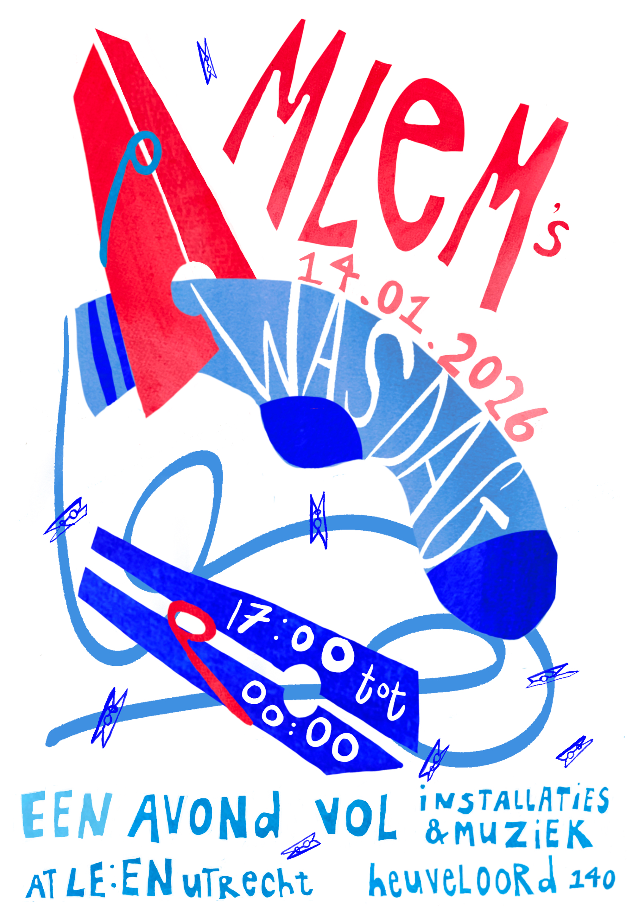

Mlem's Wasdag

Wednesday, January 14th 2026, 17:00-23:00
LE:EN (The Drain), Heuveloord 140, 3523 CK Utrecht
Entry: €7,50 if you wear a tie, otherwise it’s €10. €12,50 if you’re being sweet
Get tickets here.
NL
Hoe doe jij je was? Je machine thuis die soms een beetje lekt? Mee naar je ouders als je op bezoek gaat? Of de wasserette naast de supermarkt?
Zes installatiekunstenaars en zes surround sound muzikale acts doen hun was op Mlems Wasdag.
In één zaal staat er tussen de lakens en waslijnen een fascinerende combinatie aan interactief, fashion, beeldend en audiovisueel werk. In de andere zaal spoelen 6 muziekperformances in 8.1 surround sound al je ziel schoon.
Installatiekunst:
Emma Winia, Luid met jou, Rozemond Natter, stgreep, Anne Kleinjan.
Muzikale acts:
Basmasjien, Sio’s Orange Core, Snares, Jesper Bloem, Colin Knoester & Heuptasje, Pavlina.
De komende weken kom je meer te weten over wat alle artiesten precies in de wastrommel hebben zitten.
EN
How do you do your landry? Your own washing machine at home? Take it with you when you visit your parents? The laundromat next to the grocery store?
Six installation artists and six surround sound musical acts will do their laundry on Mlems Wasdag.
One room will feature a fascinating combination of audiovisual, fashion, visual and interactice art. In the other room, 6 musical performances in 8.1 surround sound will wash your soul clean.
Installation art:
Emma Winia, Luid met jou, Rozemond Natter, stgreep, Anne Kleinjan.
Musical acts:
Basmasjien, Sio’s Orange Core, Snares, Jesper Bloem, Colin Knoester & Heuptasje, Pavlina.
In the following weeks you’ll learn more about what all artists have in their washing drum.